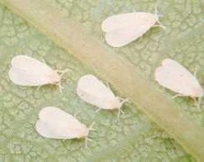
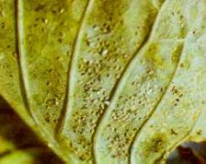

Üvegházi molytetű (lisztecske,
fehérlégy)
Trialeurodes vaporariorum
Üvegházakban, fóliasátrakban jól ismert kártevő, de egyre gyakrabban a szabadföldi zöldségeken is megfigyelhető. Előnyben részesíti a paradicsomot, uborkát, de paprikán, káposztaféléken is táplálkozik. Szívogatása következtében a növények levelei sárgulnak, majd lehullanak, végül a növény elpusztul. Kártételét fokozza, hogy táplálkozása során - a levéltetvekhez hasonlóan - mézharmatot választ ki, amelyen a korompenész telepszik meg, gátolva a levél asszimilálását, sőt a vírusokat is terjeszti. Az imágó 1,5 mm, testét fehér viaszos bevonat borítja, háztetőszerűen összecsukott szárnyakkal molyhoz hasonló. Egy imágó 100-500 tojást (igen apró) rak. A levélhez szorosan simuló lárvái áttetszőek, laposak. Az imágó és a lárva is károsít. A meleg körülményeket szereti, akkor évente 8-12 nemzedéke fejlődhet.
Védekezés:
- Csapdázás nem száradó ragasztóval bevont sárga lapokkal (100
négyzetméterre 4-5 db, 160 cm magasan), amely a kártevő felszaporodását jelentősen
késlelteti.
- Biológiai védekezés Encarsia formosa fürkész betelepítésével. Ezt a Csongrád
Megyei Növényvédelmi és Agrokémiai Állomástól, Hódmezővásárhelyről lehet
beszerezni.
|  |